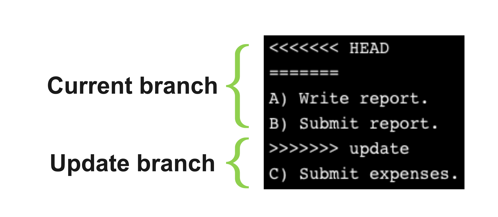

# 1/2 create b
git branch page_col #create a new branch named "page_col"
# 2/2 then switch to b
git checkout page_col
# or 1+2/2 CREATE + SWITCH BRANCHES
git checkout -b page_col Git branches
Caution
Web page construction in progress…
Branches
Branches are just pointers to commits.
git branch <name> <source> creates a new branch referencing the same commit as <source>. git branch feature master git branch feature origin/feature
Create & checkout a branch
“checkout” means to change the branch you are currently working on (or switch to)
Rename a (local) branch
It’s the -m parameter !
- you cannot rename a remote branch –> you delete it and re-upload it
# In currently checkedout
git branch -m better_name
# In different branch (non HEAD)
git switch master
git branch test_branch # fake one
git branch -a # it's there
git branch -m test_branch test_branch2Rename a (local) branch
It’s the -m parameter !
- you cannot rename a remote branch –> you delete it and re-upload it
# In currently checkedout
git branch -m better_name
# In different branch (non HEAD)
git switch master
git branch test_branch # fake one
git branch -a # it's there
git branch -m test_branch test_branch2See which branches there are
# (check which branches)
git branch # to list local branches.
git branch -r # to list remote branches.
git branch -a # to list all branches (local + remote).
git branch --merged # to list branches that have been merged into the current branch.Delete a branch (up)
This is only local, no remote. This is only local, no remote.
# delete local
git branch -d up
# (delete remote)
# (delete remote)
git push origin --delete up # error: unable to delete 'up': remote ref does not existMerging master into a misaligned different branch
GOAL = git merge master: MY GOAL HERE is to UPDATE wkg_branch with all the new stuff I have on master (this won’t affect master)
However, if I go Github and examine branches and it tells me that wkg_branch is like this
This branch (
wkg_branch) is 2 commits ahead of, 2 commits behindmaster.
# By the way
git log --graph --oneline --all0. Switch to other branch
It is better to commit or stash your changes before switching branches!!!
You can also use git switch other_branch which is more specific
git switch wkg_branch
cat .git/HEAD # (confirms me I moved)However I might have ALSO new/uncommitted stuff in the wkg_branch
1. Evaluate changes
Review these changes to ensure you understand what will be merged.
# check commits in wkg_branch
git log -2 --graph master..wkg_branch
# 2 commits...
# qlc su wkg_branch
# pasticci su wkg_branch
# check commits in master
git log -2 --graph wkg_branch..master
# 2 commits
# split git_branch + git_collab ⑂
# removed branch new_sh2. Commit changes left on wkg_branch
git indicates the two versions of the file with <<<<< and >>>>> markers.

Here there are 3 options:
- Abort merge
- Resolve conflicts manually
- Use a merge tool
2.1. Abort the merge
git merge --abortThis will revert the working directory to the state before the merge attempt.
2.2. Resolve conflicts manually
Deal with CONFLICTING FILES
Different ways to resolve conflicts:
- Commit local changes
# (in wkg_branch)
git add .
git commit -m "Save local changes"
# then merge master into wkg_branch
# then merge master into wkg_branch
git merge masterStash the changes
# (in wkg_branch)
git stash
# then merge master into wkg_branch
# then merge master into wkg_branch
git merge master
# Bring your changes back
# Bring your changes back
git stash pop- Discard the local changes
# (in wkg_branch)
git checkout -- .
git checkout -- docs/git/git_branches.html docs/search.json docs/sitemap.xml
# then merge master into wkg_branch
# then merge master into wkg_branch
git merge masterDeal with UNTRACKED FILES in wkg_branch
these too could get overwritten by the merge, so I have to stash or move/delete them
#(this includes new files you haven't added yet)
git stash push --include-untracked
# then merge master into wkg_branch
git merge master
# Bring your changes back
git stash pop2.3. Resolve conflicts with a merge tool
(like the one in VS CODE)
You can use a merge tool to resolve the conflicts, such as git mergetool or git difftool.
The best way for SOURCE CODE FILES is to go on VS CODE and use the guided merge prompt to manually choose the version to keep.
The best way for RENDERED FILES (i.e.
docs/*files) is to delete the file and re-render it.
# --theirs means "restore files as in the branch you are merging in," (master)
git checkout --theirs -- docs/index.html
# then
git add docs/index.html
git commit3. Then add + commit to confirm the merge
git add marks the conflicts as resolved, and git commit concludes the merge process.
# upon detecting and resolving conflicts...
git add . # stages all resolved files at once
git commit # Git will automatically open a merge commit message like: Merge branch 'master' into wkg_branch4. Push the Updated Branch
# check status
git log --graph --all --oneline --decorate
git log --graph -5 --oneline --decorateDaily workflow with wkg_branch
[see file /Users/luisamimmi/Documents/__nerd/00_shell_git _make/tracking_branch2.sh]
A possible workflow could be to add features to wkg_branch and then merge them into master when they are ready.
- How to avoid pointless conflicts of rendered files (e.g.
docs/*) which complicate merges unnecessarily?
On the working branch wkg_branch
Do the above and merge master into
wkg_branchfirstWork on new branch
wkgfrommaster(ormain) for each new feature or bug fix.Commit changes to
wkg_branchas you go along.
git checkout wkg_branch
# # work on .qmd files
# render locally if needed (but don't commit docs/)
git add git/git_branches.qmd
git commit -m "Work on git_branches.qmd"Then on the master branch master
- When done, merge
wkg_branchintomaster.
# Switch to receiving branch
git checkout master
# Merge new stuff into master
git merge wkg_branch # this is *merged* INTO the branch you are on (master)
# or
git merge -m "some message" wkg_branch
# Proceed as usual also to get rendered files
quarto render
git add docs/
git commit -m "Update docs"
git push origin master- check
git diff master...wkg_branch '***.qmd'QGeneral view on branches
git branch --merged
git branch --no merged
git log --oneline -4
# which Git branches are tracking which Upstream brances
git branch -vv
#* master 28bb22c [origin/master] quick fix
# page_col c86edff [origin/page_col] added color.qmd to branch
# test_branch2 c86edff added color.qmd to branch
# wkg_branch 6fb1535 Work on git_branches.qmd- The main branch (
master) has a tracking branch of [origin/master] -
page_colhas a tracking branch of [origin/master]
Good strategy to minimize conflicts
- If I have a long standing working branch (e.g.
wkg_branch) I should merge it into master frequently so that it doesn’t diverge too much from master.- if that is not possible I can do the opposite and merge master into
wkg_branchfrequently (i.e. “tracking the main branch”)
- if that is not possible I can do the opposite and merge master into
- Do not commit rendered files (e.g.
docs/*) in the working branch (but only source code) - Beware of spaces/tabs in the source code files, as they can cause conflicts when merging branches.
REMOTE TRACKING
https://www.linkedin.com/learning/complete-guide-to-git/remote-tracking-branches?autoSkip=true&resume=false
i.e. USING A REMOTE AS PRIMARY HUB FOR COLLABORATION
An upstream branch in Git refers to a branch that serves as a reference point for another branch. Typically, it’s used to track the remote branch, allowing developers to fetch updates, compare changes, and push their commits easily. Setting an upstream branch simplifies the process of keeping local and remote repositories in sync.
Collaborator A) push a certain commit (4ee789) to the remote then Collaborator B) fetch from the remote the same (4ee789).
git remote
# origin
# upstream
git remote -v
#origin git@github.com:Lulliter/nerd_help.git (fetch)
#origin git@github.com:Lulliter/nerd_help.git (push)
#upstream git@github.com:Lulliter/nerd_help.git (fetch)
#upstream git@github.com:Lulliter/nerd_help.git (push)git log -2 --onelineEach collaborator must clone the remote repository to their local machine. This creates a local copy of the repository that is linked to the remote repository.
🟠 Push upstream a local branch
(kind of too complicated for me)
It is important to Setup an Upstream Branch in Git to make the workflow smooth and manage branches efficiently.
An upstream branch in Git refers to a branch that serves as a reference point for another branch. Typically, it’s used to track the remote branch, allowing developers to fetch updates, compare changes, and push their commits easily. Setting an upstream branch simplifies the process of keeping local and remote repositories in sync.
- Create local branch
- Switch to local branch
git checkout -b <new_branch> - [When the current branch i.e (‘new_branch’) has no Upstream branch set]
git push –-set-upstream origin <new_branch>command (the 1st time you push) - Thereafter
git push -u origin <new_branch>(all subsequent git push commands automatically move local branch changes up to the remote branch.)